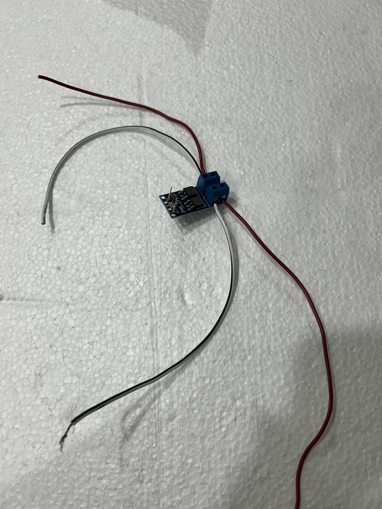

Montagem de módulos MOSFET na base
A instalação dos módulos MOSFET merece planejamento para facilitar as conexões e manter os fios organizados. Na montagem da EFMN 74, alguns cuidados práticos ajudaram a definir a posição dos módulos e a sequência de trabalho.
1. Planejar a posição do primeiro módulo
Posicionar o MOSFET sobre a base, ainda sem fixá-lo. Observar de onde chegam os fios de alimentação e para onde seguem os fios de saída e de controle. Deixar espaço para acessar os bornes e os parafusos de fixação.
2. Preparar os fios antes de fixar o MOSFET

A foto mostra a preparação do módulo MOSFET antes de sua fixação na base. Os quatro fios de alimentação e saída já estão conectados aos bornes. Os fios de controle serão conectados posteriormente.
Medir, cortar e conectar os fios vermelhos e pretos de entrada e saída enquanto o módulo ainda está solto. Isso facilita o acesso aos bornes e o aperto dos parafusos.
Cada módulo utiliza quatro fios de potência, sendo dois de entrada e dois de saída, além dos fios de controle. Planejar percursos curtos e organizados, deixando uma pequena folga para que os fios não fiquem tensionados.
Antes de prender os fios, conferir as identificações de entrada e saída e as polaridades impressas no módulo. As cores ajudam a organizar a montagem, mas não substituem essa conferência.
Com os fios conectados, posicionar novamente o módulo sobre a base e conferir se os comprimentos e os caminhos ficaram adequados. Ajustar a disposição antes da fixação definitiva, preservando o acesso aos bornes e evitando que os fios sejam puxados ou dobrados junto às conexões.
3. Utilizar uma chave adequada
Para apertar os parafusos dos bornes, utilizar uma chave Phillips bem pequena, compatível com a cabeça do parafuso. Na EFMN 74, foi utilizada uma chave de relojoeiro.
Conferir se os fios ficaram firmemente presos e se não há filamentos de cobre soltos que possam encostar nos bornes vizinhos.
4. Fixar os módulos um de cada vez
Após conectar os fios de potência, fixar o primeiro MOSFET na base. Em seguida, estudar a melhor posição para o segundo, considerando os caminhos dos fios já instalados. Repetir esse procedimento com os demais módulos.
A instalação sucessiva permite ajustar a disposição do conjunto, reduzir cruzamentos e preservar o acesso às conexões.
5. Testar após a fixação
Com toda a alimentação desligada, inclusive a conexão USB da placa de controle, testar a continuidade de cada fio entre suas extremidades. Conferir também se as entradas, saídas e polaridades correspondem às ligações planejadas.
O teste de continuidade verifica os fios e as conexões. O funcionamento do MOSFET deverá ser conferido posteriormente, em um teste com alimentação e carga adequadas.
6. Documentar cada etapa
Registrar cada passo da montagem, de preferência com fotografias tiradas durante a execução. Fotografar o posicionamento dos módulos, a conexão dos fios antes da fixação, os bornes e o conjunto finalizado.
Associar às fotos pequenas anotações com a identificação de cada módulo, os bornes utilizados, as cores dos fios, a origem e o destino das ligações e os resultados dos testes de continuidade.
Fazer os registros ao longo de todo o trabalho. As imagens devem permitir reconhecer os fios e ler as identificações dos bornes. Sempre que houver uma alteração, atualizar as anotações e tirar novas fotos para manter a documentação de acordo com a montagem.
Esses cuidados tornam a montagem mais organizada e facilitam a inspeção e a manutenção dos módulos.